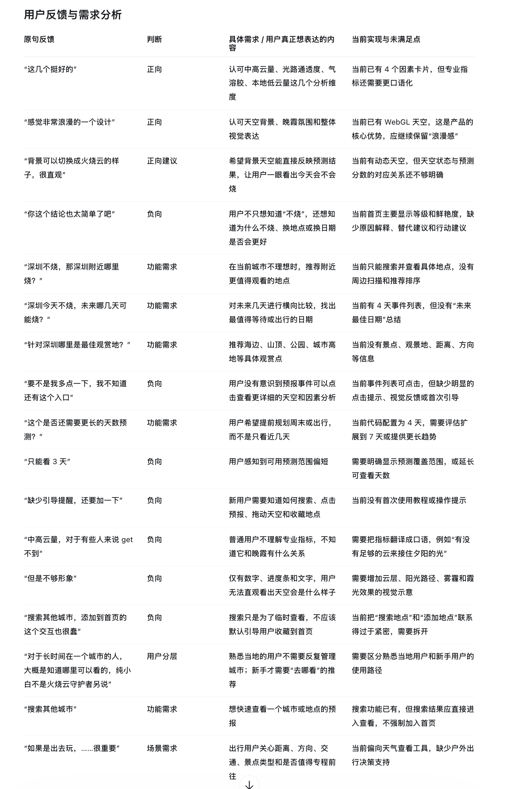
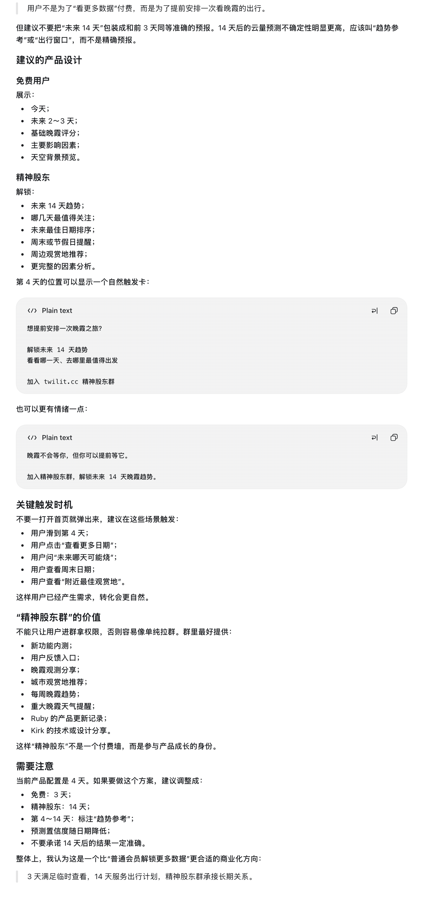
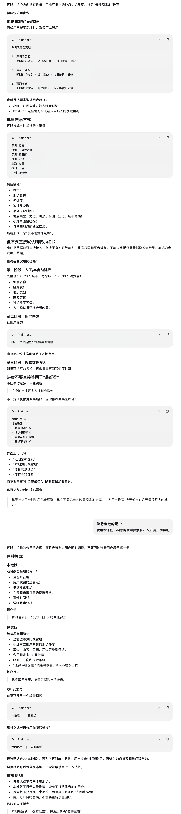

产品判断Product findings
Twilit 已有四天朝晚霞预报、因素解释、可交互的 WebGL 天空、地点搜索和收藏。反馈集中在三件事：用户看不出哪一场值得等；云量等指标与晚霞的关系不够直观；出游用户缺少观赏地点与日期判断依据。
优先让预报结论容易读、场次容易切换、观赏地点有来源可查，同时保留天空体验的浪漫感。
Twilit already has a four-day sunrise/sunset forecast, factor explanations, an interactive WebGL sky, place search, and saved places. Feedback points to three gaps: it is hard to tell which event is worth waiting for; cloud metrics are not intuitive; and travelers lack the viewpoint and date context needed to plan.
Make conclusions easier to read, events easier to compare, and viewpoint sources traceable while preserving the atmospheric sky experience.
反馈、实现现状与建议Feedback, current state, and recommendations
| 用户反馈 | 当前实现核对 | 建议 |
|---|---|---|
| 四个因素卡片不错；整体设计浪漫 | 四因素卡和 WebGL 天空已存在 | 保留视觉风格；因素标题先说人话，专业名词作为补充 |
| 背景能否直观展示“火烧云” | 可点选预报场次预览天空；默认天空与所选场次的时间关系需更清楚 | 标明实时/预览、日期和场次；用太阳—远处云层—观察者示意光路 |
| 结论太简单，想知道为什么、换地点或日期是否更好 | 已有因素解释，缺少综合判断与行动建议 | 提供“预测等级—主要原因—可做什么”；注明并列、数据缺失和模型分歧 |
| 不知道预报能点；缺少新手提示 | 预报行可点击，但提示不足；没有完整的可视引导 | 首次搜索、选预报和拖太阳时给轻提示；允许关闭和重看 |
| 中高云量难懂，页面不够形象 | 已有专业指标和部分解释 | 用“云能否被照亮”“夕阳能否照到云底”“空气通透程度”等口语标题，配光路机制图 |
| 只能看三天，想看更远日期 | 配置为四天；默认折叠场次可能被误解成天数 | 明确覆盖日期并按天展示；远期标成趋势参考并降低可信度提示 |
| 本地不烧时想找附近；想知道未来哪天最值得等 | 已有单地点预报，没有周边扫描和日期总结 | 先做轻量场次摘要和小范围比较，展示距离、数据完整度和模型差异 |
| 想要海边、山顶、公园等具体观赏地 | 地点可搜索，缺少整理过的观赏点和机位信息 | 人工建立 10–20 个城市、每城 10–30 个候选点，逐步核实坐标、视野与来源 |
| 搜索城市与加到首页容易混淆 | 搜索与收藏逻辑分开，部分文案仍暗示搜索即添加 | 搜索叫“搜索地点/查看预报”，保存动作叫“收藏地点” |
| 本地熟手与出游新手需要不同路径 | 已有定位、收藏和搜索 | 提供本地/探索轻切换；默认本地快速查看，探索强调观赏点与出行条件 |
| 出行要考虑距离、方向、交通和景点类型 | 有太阳方位和地点坐标基础；路线时长与开放信息不足 | 先展示已确认的距离、方向、类别和准入信息；可靠数据接入后再提供路线 |
| Feedback | Checked implementation | Recommendation |
|---|---|---|
| The four factor cards are useful; the design feels romantic | Factor cards and WebGL sky exist | Keep the visual identity; lead with plain-language factor labels |
| Show intuitively whether the sky may glow | Forecast events can preview the sky; time context needs clarity | Label live/preview state, date and event; add a sun-to-cloud light-path diagram |
| The conclusion is too simple; explain why and what to do | Factor explanations exist, but synthesis and action guidance are limited | Show rating, leading reason and action; account for ties, missing data and model disagreement |
| Users miss that events are clickable and need onboarding | Rows are buttons, but affordance is subtle; no full visual guide | Add dismissible, replayable hints near search, forecast selection and sun dragging |
| Cloud metrics are hard to understand; visuals lack explanation | Technical factors and some explanations exist | Use plain labels and a simple light-path diagram |
| Show more than a few days | Four-day configuration; collapsed events can look like a shorter forecast | Show dates by day; label long-range output as a lower-confidence trend |
| Find a nearby place when local conditions are poor; compare dates | Single-place forecasts exist; nearby scan and date summary do not | Start with lightweight event summaries and a small regional comparison |
| Recommend specific beaches, hills, parks and viewpoints | Search exists, but no reviewed viewpoint dataset or camera positions | Curate 10–20 cities with 10–30 candidates each, verifying coordinates, view and sources |
| Searching and adding a home place feel conflated | Search and saving are logically separate; some labels still imply otherwise | Separate “Search places” from “Save place” in the interface |
| Locals and travel planners need different paths | Location, saved places and search are available | Offer a light Local/Explore switch, defaulting to quick local viewing |
| Travel decisions need distance, direction, transit and place type | Sun azimuth and coordinates exist; route and access data are incomplete | Show confirmed distance, direction, category and access first; add routes only from reliable data |
预测窗口与支持者方案Forecast window and supporter tier
| 体验 | 建议内容 |
|---|---|
| 免费 | 今天及未来 2–3 天、基础朝晚霞等级、主要因素、天空背景预览 |
| 精神股东/支持者 | 最长 14 天趋势参考、值得关注日期、周末提示、周边观赏点、扩展因素分析与每周趋势 |
| Experience | Suggested contents |
|---|---|
| Free | Today and the next 2–3 days, basic sunrise/sunset rating, leading factors and sky preview |
| Supporter | Up to 14 days of trend context, notable dates, weekend reminders, nearby viewpoints and fuller factor analysis |
随日期变远明确降低可信度，不承诺 14 天结果固定准确。用户到达第 4 天、点“查看更多日期”、查周末或打开附近观赏地时，再自然介绍延长范围的价值；首页不弹窗。
支持者社群应提供功能内测、用户反馈、观测分享、城市地点推荐、每周趋势、重要天气提醒和产品更新记录，让支持者参与产品成长。
Show decreasing confidence with lead time and make no fixed accuracy promise for day 14. Introduce the extended outlook when a user reaches day four, asks for more dates, checks a weekend or opens nearby viewpoints. Avoid a home-screen popup.
Give supporters meaningful participation through feature previews, feedback, observations, city recommendations, weekly outlooks, major weather alerts and product updates.
城市观赏点库：首批数据City viewpoint catalog: first batch
覆盖深圳、广州、珠海、厦门、福州、杭州、上海、南京、苏州、武汉、成都、重庆、青岛、大连和三亚，每城 15 个候选点。
A/B/C 证据等级分别为 58/117/50。A 为官方或地方新闻资料直接提及地点及朝晚霞、日出日落；B 为旅游平台或二手资料；C 为地点来源可追溯但观赏用途主要来自地形判断。等级不是实地机位、天气质量或观赏效果认证。
所有点尚未实地核验，camera position 为空。开放时间、票价、步行时间、社交热度和天气分数等未知值保留为空。未抓取小红书，也未将讨论热度当成天气或观赏质量。
The catalog covers Shenzhen, Guangzhou, Zhuhai, Xiamen, Fuzhou, Hangzhou, Shanghai, Nanjing, Suzhou, Wuhan, Chengdu, Chongqing, Qingdao, Dalian and Sanya, with 15 candidates per city.
Evidence tiers A/B/C contain 58/117/50 records. A means an official or local news source directly connects a place to sunrise, sunset or colorful clouds; B uses travel platforms or secondary sources; C has traceable place information but viewing suitability is mainly a terrain-based editorial judgment. Tiers do not certify camera positions or weather quality.
None of the places has been field-verified; camera positions are empty. Unknown access, price, walking time, social popularity and forecast values remain empty. No Xiaohongshu data was scraped, and discussion volume is not treated as weather or viewing quality.
建议落地顺序Suggested sequence
- 体验清晰度：按天组织预报，显示日期和朝晚霞场次；新增综合结论与值得关注场次；改善搜索/收藏文案、因素标题和轻量引导。
- 预测窗口：先验证天气、风场、气溶胶时效与缺测处理，再提供 7 天或 14 天趋势；明确远期不确定性。
- 观赏点试点：人工审校首批候选，补充具体机位、方向、遮挡、开放信息和核验日期；搜索其他城市可直接查看，收藏与搜索分开。
- 用户共建和周边比较：用户提交进入审核队列；审核来源、同名地点、坐标系和开放性后入库。天气、视野、距离、可达性分别展示。
没有授权时不批量抓取社交平台。讨论热度和天气/观赏条件分开存储与解释。
- Clarity: Group events by day, show dates and sunrise/sunset labels, add a synthesized outlook, and improve search/save labels, factor language and onboarding.
- Forecast window: Validate weather, wind, aerosol horizons and missing-data handling before adding a 7- or 14-day trend; show long-range uncertainty.
- Viewpoint pilot: Review the first candidates and add actual camera position, direction, obstruction, access and verification date. Keep search separate from saving.
- Community and nearby comparison: Review user submissions for sources, duplicate names, coordinate systems and access. Display weather, view conditions, distance and access separately.
Do not bulk-scrape social platforms without authorization. Store and explain discussion volume separately from weather and viewing conditions.
原始截图Source images
截图是需求材料；每项实现状态以代码核验及产品验收为准。Screenshots are source material. Implementation status should be confirmed against code and product acceptance.


